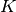
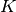
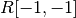
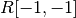
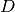
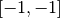

KQ¶
- pyvsim.Utils.KQ(A)[source]¶
This decomposition is proposed in the book “Multiple View Geometry in computer vision” by Hartley and Zisserman. It is basically a RQ decomposition (which takes a matrix
 and finds a right, upper diagonal
camera matrix  and a orthogonal matrix
and finds a right, upper diagonal
camera matrix  and a orthogonal matrix  so that
so that  (
( is a normalizing factor ()).
is a normalizing factor ()).This specific function has the following extra steps:
1) it defines a diagonal matrix  which, when post-multiplied by makes its diagonal elements positive.
- it normalizes by its  element.
The use of these steps is that when the matrix
is a DLT matrix,
is a camera matrix, and is the orientation of the
camera (its rows are the front, down and left vectors, respectively).Parameters : A : numpy.array
A square matrix. Attention, DLT matrices need to have their last column taken away for this procedure.
Returns : K : numpy.array
The camera matrix, normalized by its element.
Q : numpy.array
The camera orientation matrix